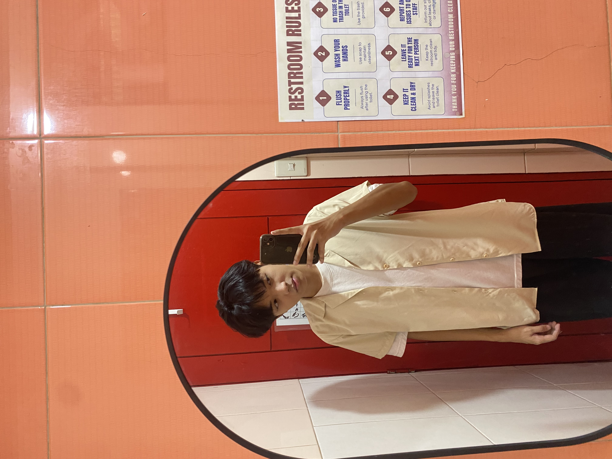

GRADE 12 · ICT STUDENTCurious mind.
Curious mind.
Creative work.
Hi, I’m Chris. I’m learning how technology, design, and ideas come together to create things that are useful and meaningful.
Learning one project at a time.

C.
01 / A LITTLE INTROBuilding skills.
Building skills.
Finding my direction.
I believe progress comes from staying curious, trying unfamiliar things, and being willing to improve. This portfolio is a snapshot of what I’m learning and the interests I want to explore further.
↗02 / WHAT I’M INTOThings that
Things that
keep me curious.
A few areas that inspire me to keep learning and creating.
03 / THE NEXT CHAPTEREvery project is
Read my reflection ↗Every project is
another starting point.
I’m looking forward to learning more, experimenting with new ideas, and making better things along the way.